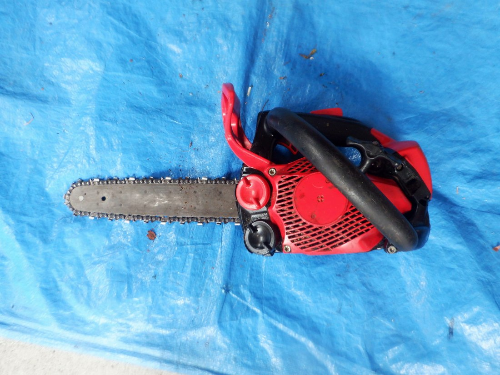
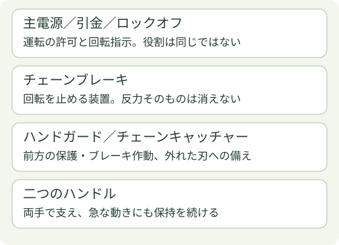
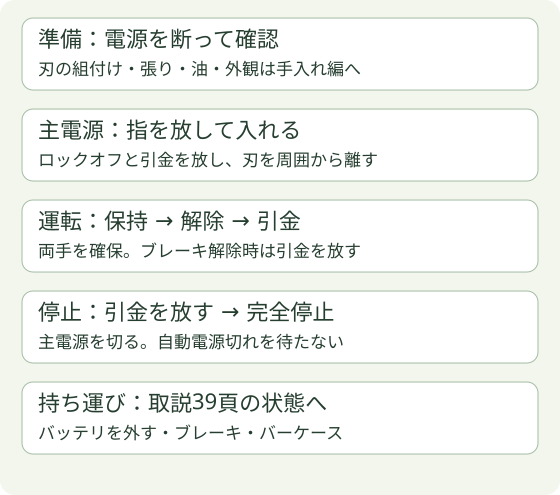
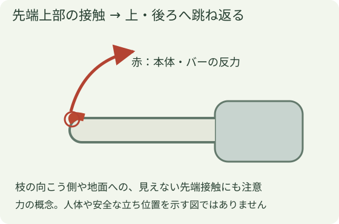
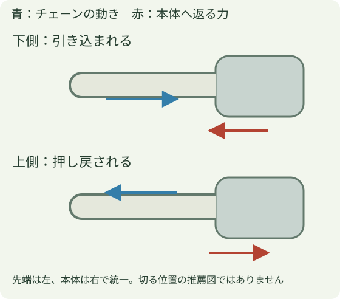

チェーンソー操作の基礎
この章でつかむこと
操作部を名前だけでなく役割で区別し、始動前・運転中・停止後で確認する状態を説明できるようにします。主画像は道具台帳の写真21「小さいチェーンソー」です。MUC254Dの機種別操作例は別枠として読み、写真21へ流用しません。
始動前・運転中・停止後で、操作と機体の状態をつなげて読みます。

本人が常用すると説明した「小さいチェーンソー」は、既存の写真対応では写真21です。以下のMUC254Dの始動・停止例は別機種の資料で、写真21の操作手順には流用しません。写真21のチョーク・始動・停止スイッチ等の位置と操作は、対応取扱説明書を確認するまで未掲載です。
操作を覚えるときの見方
図の矢印を追う前に、①いま回転できる状態か、②両手で保持できているか、③次の操作で何が変わるかを言葉にします。ブレーキが掛かっていることと、電源が切り離されていることは別です。
バー先端だけに目を固定せず、接触しそうな枝・足元・周囲の人も確認します。作業を続けて前かがみや無理な持ち方が続いていないかも振り返ります。「まだ大丈夫」という感覚だけで、保持や姿勢の崩れを見落とさないためです。
1 操作部は、役割で覚える

ロックオフは誤操作を防ぐ仕組み、引金は回転の指示、主電源は運転の許可です。ブレーキは回転を止めますが、キックバックの反力自体をなくす装置ではありません。作業前に正常な作動を取説どおり確認します。
2 別機種の確認例：MUC254Dの始動・保持・停止

- 始動前：バッテリを外した状態で組付け・張り・油・損傷を確認。装備と足場、周囲の人・枝・地面も確認します。手入れの詳細は手入れ編へ。
- 電源を入れる：点検後、適合バッテリを確実に装着します（取説21頁）。バーケースを外し、引金とロックオフから指を放して主電源を入れます。刃を樹木や周囲の物に当てたまま始動しません。
- 保持して運転：右手をトップ、左手をサイドハンドルへ。引金を放した状態でブレーキを解除し、ロックオフを握って引金を操作します。片手や不安定な姿勢で使いません。
- 止める：引金を放して回転の完全停止を確認し、主電源を切ります。自動電源切れを待つ方法にしません。
- 持ち運ぶ：バッテリを外し、ブレーキを掛け、バーケースとバッテリカバーを付けます（取説39頁）。
この型式は、前ガードを前へ倒すとブレーキが掛かり、手前へ戻すと解除。解除時に引金を引き続けないことが重要です。ボタン・ガードの位置は現物と取説で合わせます。
3 反力は、どこが当たったかで変わる

小さな枝や樹木の向こう側に先端が当たることでも発生します。先端がどこにあるかを見失わず、両手保持を続けます。肩より高い位置や不安定な姿勢で切りません。

下側でチェーンが止められると本体は樹木側へ引き込まれ、上側では作業者側へ押し戻される方向の力を受けます。刃が挟まったら、回し続けて無理に引き抜かず停止し、樹木の支持と対処を確認します。
4 実機で確認してから実技へ
写真01にはSTIHL 044、写真33には026、写真34にはMS200の外装表示が読めます。銘板・仕様と該当取説の一致は未確認のため、エンジン機のチョーク・冷間／温間始動順はここでは確定していません。
この章は実技教育・必要な特別教育の代わりではありません。操作の意味を理解した上で、該当機種と担当する作業を指導者の下で練習します。次に枝払い・小切り編で、切る前の支持を読みます。
出典と機種・適用範囲
- マキタMUC254D公式取扱説明書 — 表紙・17・35・37・39–40頁。写真20の外装型式表示と照合。
- Husqvarna：チェンソーの安全に関する基本事項 — キックバックゾーン・反力と保持の原理。
- 厚生労働省：伐木等作業の安全ガイドライン（2020改正） — 操作を作業計画・教育と結び付ける基礎。
2026年10月25日確認。メーカー図・写真は転載せず、会社写真と独自の模式図を使っています。